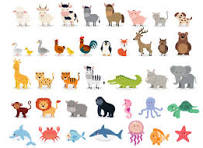

"Welcome to the wild world of animals! From the majestic lions roaming the savannah to the tiniest ants bustling beneath our feet, the diversity of creatures on our planet never fails to amaze. In this text, we'll delve into the fascinating realms of animal behavior, ecology, and conservation, uncovering the marvels of the natural world along the way. So, let's embark on this adventure together.
Savannahs are flat grasslands with scattered trees and shrubs. They're usually found near to the equator (the halfway point between the north and south parts of the Earth). This part of the world gets more direct sunlight than anywhere else, so the temperature is warm, all year round!
The Etruscan shrew, also known as the Etruscan pygmy shrew, white-toothed pygmy shrew and Savi’s pygmy shrew, is the smallest known extant mammal by mass, weighing only about 1.8 g on average. The Etruscan shrew has a body length of about 4 cm excluding the tail. Wikipedia Lifespan: 2 years Mass: 1.3 – 2.5 g (Adult) Scientific name: Suncus etruscus Length: 3 – 5.2 cm (Adult, Without Tail) Conservation status: Least Concern Encyclopedia of Life Gestation period: 27 – 28 days Class: Mammalia
What kind of animals live in the forest?
Forest habitat animals include mammals, such as squirrels; reptiles, like anoles; amphibians, such as tiger salamanders; many birds, including woodpeckers; and various insects, like butterflies and ants. Each forest type hosts its own unique set of organisms.